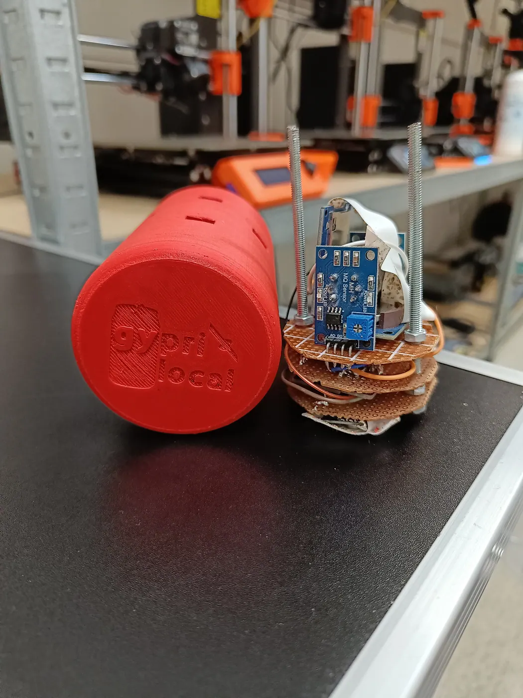
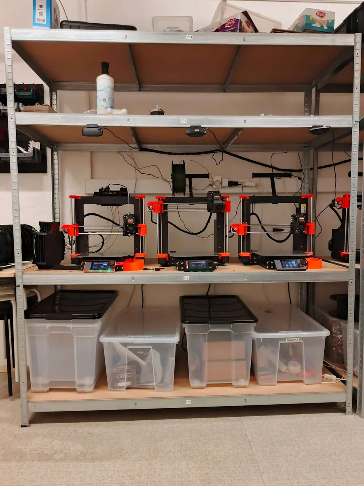
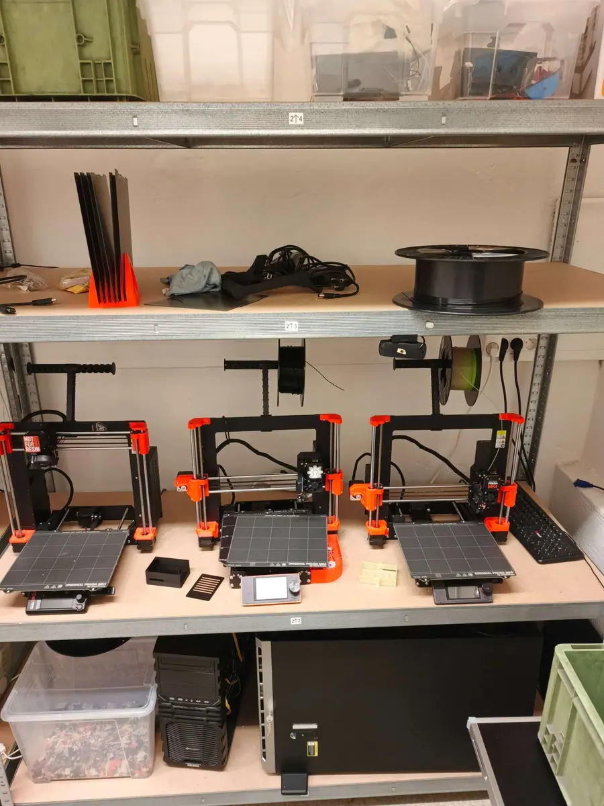
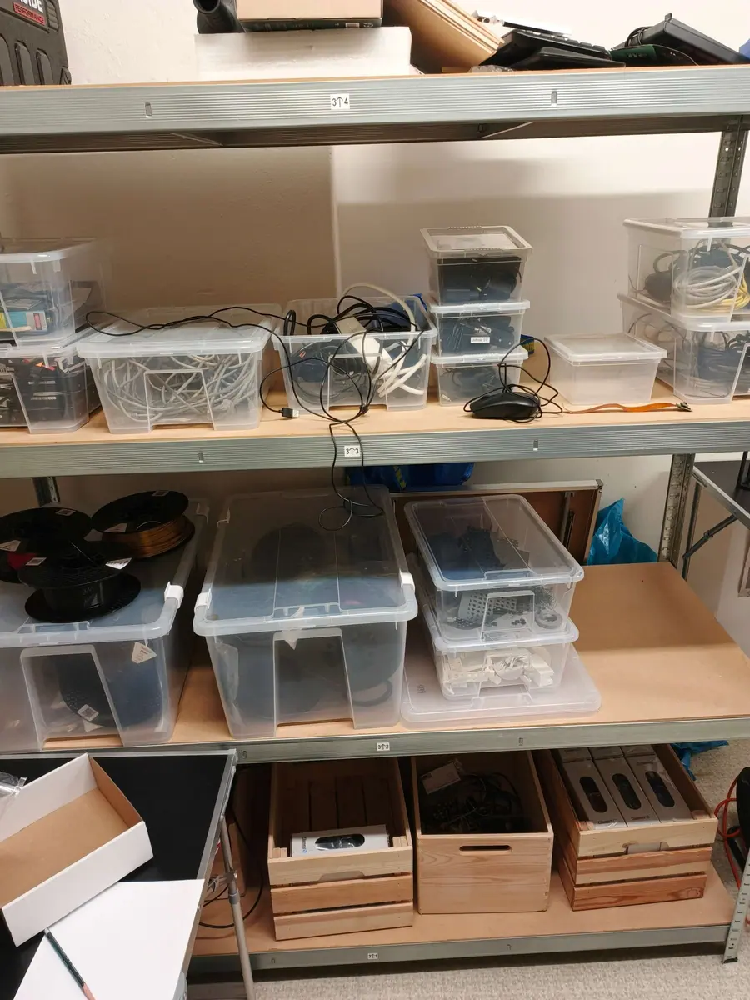
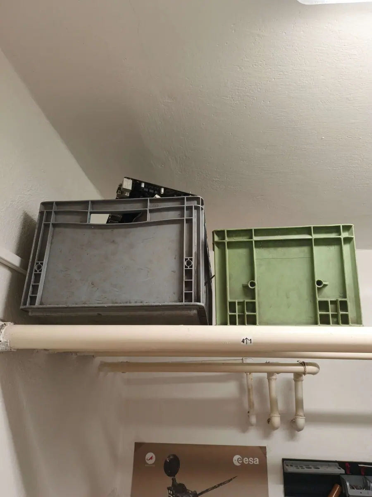

3D tisk
Sedm tiskáren Prusa Research: pět modelů MK4, jedna MK3 a jedna MINI. Od výukových pomůcek přes prototypy až po náhradní díly pro školu.
Místo pro 3D tisk, robotiku, elektroniku, programování a bastlení nad skutečnými projekty. Studenti tu získávají praxi na reálných zakázkách, v kroužku i v soutěžích, od prvního návrhu až po hotový prototyp.
Sedm tiskáren Prusa Research: pět modelů MK4, jedna MK3 a jedna MINI. Od výukových pomůcek přes prototypy až po náhradní díly pro školu.
Pájení, měření a oživování vlastních konstrukcí, od základních kleští a pájek až po CNC obrábění a vrtačku.
Sedm notebooků věnovaných sponzorem Aliance Laundry a jeden výkonný stolní počítač. Modelování, návrh desek i řídicí software pro naše zařízení.
Dílna rozvíjí kreativitu, technické dovednosti a spolupráci napříč předměty. Nabízíme prostor pro samostatnou práci, konzultace i sdílení nápadů.





Dílnu naleznete v suterénu školy vedle prostor bývalé výtvarné výchovy.
Masarykovo gymnázium, Jičínská 528, 742 58 Příbor.
Napište nám na dilna@gypri.cz.
Chceš tisknout, pájet, programovat a bastlit? Přihlas se do technického kroužku. Stačí vyplnit přihlášku.